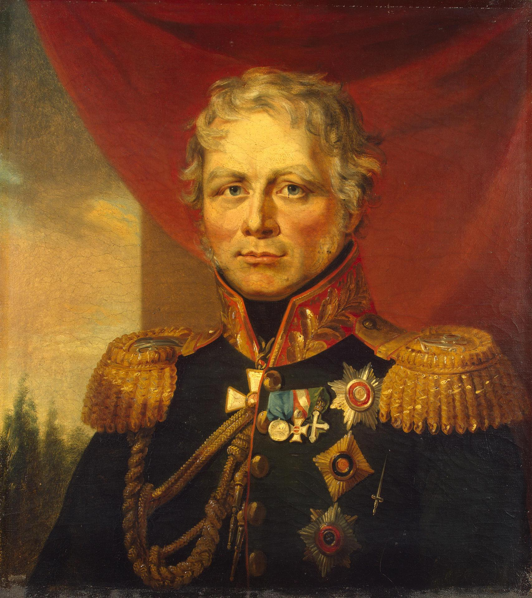
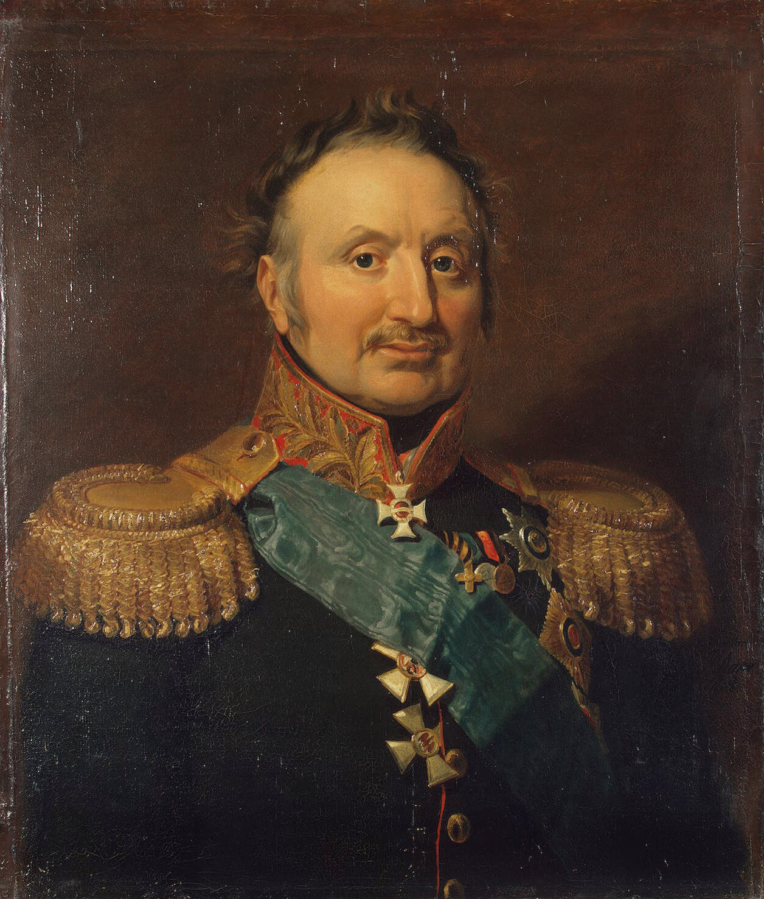
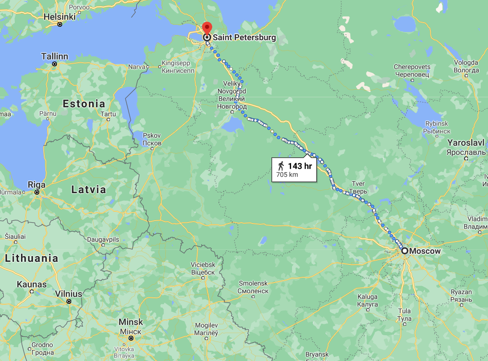
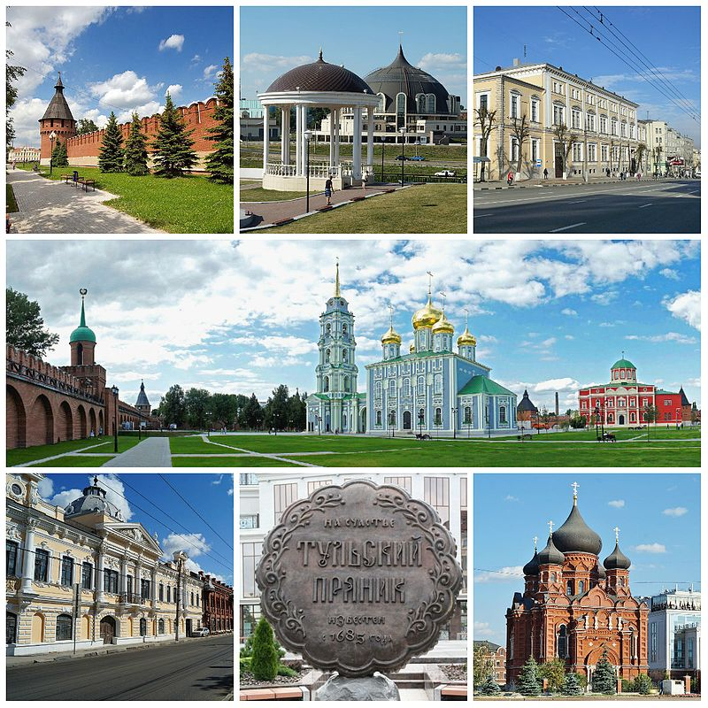

상트 페체르부르그를 향하여 ? - 고민 속의 나폴레옹
게시: 2021-01-04T06:30:59+09:00
모스크바로 돌아온 나폴레옹이 구상한 기본 방향은 다음 목표를 찾아 전진한다는 것이었습니다. 그리고 그 목표물은 바로 알렉산드르의 궁전이 있는 러시아의 공식 수도 상트 페체르부르그였습니다. 나폴레옹은 그랑다르메의 주력 군단들은 모스크바에 그대로 두고, 외젠의 제4 군단만 차출하여 상트 페체르부르그로 진격할 생각이었습니다. 주력 군단들을 모스크바에 주둔시키는 이유는 두 가지였습니다. 첫째, 외젠의 군단만으로 충분할 것이라고 판단되었고, 둘째, 남쪽으로 후퇴한 쿠투조프의 러시아 야전군으로부터 모스크바를, 정확하게는 모스크바의 보급품 창고를 지키기 위해서였습니다. 당시 상트 페체르부르그는 군사적 방비가 든든한 편은 아니었습니다. 러시아군의 쓸만한 병력은 모두 쿠투조프의 휘하에 있었으므로, 상트 페체르부르그와 나폴레옹 사이를 막고 선 것은 거의 딱 2개 부대 밖에 없었습니다. 먼저 빈칭게로더(Ferdinand Karl Friedrich Freiherr von Wintzingerode) 중장이 이끄는 기병대가 있었습니다. 빈칭게로더는 모스크바로부터 상트 페체르부르그로 향하는 주요 도로들을 휘젖고 다니며 프랑스군의 식량 징발 및 정찰 행위를 견제하고 있었습니다. 좀더 노골적으로 말하면 빈칭게로더의 부대는 군복만 입었다 뿐이지 사실상 빨치산 부대로서 제대로 된 야전군은 아니었습니다. 따라서 이들을 밀어내는데는 많은 병력이 필요하지 않았습니다. 나머지 1개 부대는 바로 비트겐슈타인(Ludwig Adolf Peter Fürst zu Sayn-Wittgenstein-Berleburg)이 이끄는 부대였는데, 이 부대가 사실상 상트 페체르부르그를 지키는 유일한 부대였습니다.

(빈칭게로더(Ferdinand von Wintzingerode)입니다. 그는 원래 튀링겐(Thüringen) 출신의 독일인으로 모스크바 북쪽에서 유격대를 지휘하며 프랑스군의 징발 활동을 공격하던 그는 나폴레옹이 모스크바를 버리고 철수할 때, 후발대로 남은 모르티에 원수가 크레믈린 궁전을 폭파하려고 한다는 말을 듣고 그를 막기 위해 백기를 들고 크레믈린의 모르티에를 찾아갑니다. 그러나 그는 프랑스군 순찰대에게 체포되어 나폴레옹에게 끌려갔고, 나폴레옹은 그가 라인 연방 출신의 독일인이므로 그는 반역자에 해당한다며 그를 즉각 교수형에 처하라고 살벌한 명령을 내렸습니다. 그러나 다행히도 나폴레옹은 곧 마음을 바꾸어 그를 프랑스로 압송하도록 했는데, 그렇게 프랑스로 끌려가던 도중 러시아군에게 구조되었고 1813년 라이프치히 전투에도 참전했습니다.) 비트겐슈타인이 이끄는 약 2만의 부대는 원래 러시아군이 드리사(Drissa)를 중심으로 나폴레옹과 대치하려고 할 때 러시아군의 우익을 맡아 우디노(Oudinot)가 이끄는 프랑스군 좌익과 대치하는 역할을 맡았던 부대였습니다. 바클레이가 7월 16일 드리사를 버리고 비텝스크로 후퇴할 때 비트겐슈타인은 자연스럽게 우디노가 상트 페체르부르그로 진격하는 것을 막는 역할을 하게 되었습니다. 이 역할이 정립된 것은 8월 17~18일 벌어진 제1차 폴로츠크(Polotsk) 전투였습니다. 우디노의 부상으로 지휘권을 넘겨받은 생시르(Saint Cyr)가 지휘한 약 3만의 프랑스군과 비트겐슈타인의 러시아군 약 2만이 맞붙은 이 전투에서, 러시아군은 간신히 프랑스군의 공격을 막아내고 폴로츠크를 경계로 대치하는 상황에 들어갔습니다. 이 전투 이후 분명히 비트겐슈타인의 부대가 더 열세이기는 했습니다만 생시르는 굳이 무리한 공세를 취하지는 않았습니다. 원래 우디노의 임무가 상트 페체르부르그를 공략하는 것이라기보다는 프랑스군의 후방 병참선을 비트겐슈타인으로부터 지키는 것이었기 때문이었습니다.

(비트겐슈타인(Petr Christianovich Wittgenstein)입니다. 이름에서 알 수 있듯이 이 양반도 러시아에 정착한 독일계 귀족이었습니다. 그는 쿠투조프가 병사한 이후 한때 러시아과 프로이센 연합군의 총지휘관에 임명되기도 했으나 역시 능력치가 대단한 분은 아니었는지 뤼첸(Lutzen) 및 바우첸(Bautzen) 전투를 말아먹고는 바클레이에게 지휘권을 양보해야 했습니다.) 상황이 이랬기 때문에 나폴레옹은 외젠의 제4 군단과 몇몇 부대만 이끌고도 충분히 상트 페체르부르그 공격에 나설 수 있다고 생각했습니다. 실제로 당시 상트 페체르부르그의 분위기도 '이젠 모든 것이 끝났다'라는 것이어서 나폴레옹이 군대를 몰고 코 앞까지 온다면 상황은 정말 극심한 혼란으로 치닫게 될 수 있었습니다. 그런데 뜻 밖에도 외젠을 제외한 휘하 원수들이 모두 나폴레옹의 계획을 듣고는 격렬하게 반대에 나섰습니다. 전에도 나폴레옹의 대담한 계획에 부하들이 반발한 경우가 많았습니다만, 그런 반발은 모두 나폴레옹의 카리스마에 모두 간단히 진압되곤 했습니다. 그러나 이번엔 달랐습니다. 나폴레옹의 기록관으로서 나폴레옹을 밀접 보좌했던 펭(Agathon Jean François Fain) 남작에 따르면 부하들의 나름대로 이유가 있는 반발에 이번에는 나폴레옹조차도 혼란스러워하고 자신감을 잃은 것처럼 보였다고 합니다.

(전에 소개했던 펭(Fain) 남작입니다만 잊으셨을 것 같아 다시 올립니다. 그는 은퇴 이후 나폴레옹 관련되어 여러편의 책을 냈는데, 특히 1908년에 영어로 번역되어 출간된 Memoires du Baron Fain, Premier Secretaire du Cabinet de l'Empereur, 즉 '황제 내각의 수석 비서관 펭 남작의 회고록'이 매우 유명했습니다.) 어떻게 보면 나폴레옹의 계획, 즉 알렉산드르를 더욱 강력하게 압박하기 위해 상트 페체르부르그를 들이친다는 것이 가장 상책처럼 보였습니다. 그러나 구체적인 작전 계획을 짜보면 답이 나오질 않았습니다. 먼저, 때가 너무 늦었습니다. 모스크바에서 상트 페체르부르그까지는 걸어서 대략 18일 정도가 걸렸는데, 대포와 보급 마차까지 끌고 가자면 사실상 1달 정도를 예상해야 했습니다. 그러나 이것도 어디까지나 전투 없이 이동한다는 것을 가정할 때의 이야기였고, 비슷한 거리였던 빌나에서 모스크바까지를 주파하는데는 2달이 넘게 걸렸습니다. 이미 때는 9월 하순이라서, 나폴레옹이 상트 페체르부르그 외곽에 도착할 때는 빨라도 11월 초가 될 것이었습니다. 알렉산드르가 정말 겁을 먹고 항복을 하면 모르겠으나, 까딱하다가는 습지인 상트 페체르부르그 외곽에서 러시아의 매서운 동장군을 만나야 할 상황이 될 수도 있었습니다.

(모스크바에서 상트 페체르부르그로 걸어갈 때 걸리는 시간입니다. 모스크바에서 빌나까지의 거리와 비슷합니다.) 부하들이 내놓은 대안도 여러가지였습니다. 어떤 이들은 스몰렌스크까지 일단 후퇴하여 그 다음 작전을 논의하자고 했습니다. 어떤 이들은 반대로 남쪽 공업 지역인 툴라(Tula)와 칼루가(Kaluga) 일대로 진격하여 그 방향으로 후퇴한 쿠투조프의 군대를 섬멸하고 또 보급품을 확보해야 한다고 했습니다. 다들 나름대로의 논리가 있었습니다만, 스몰렌스크로 후퇴하자고 하는 것은 '아몰랑 일단 후퇴'라는 무책임한 소리로 들릴 수도 있습니다. 그러나 이것도 꽤 근거가 있는 대안이었고, 그 이유로 인해 쿠투조프의 뒤를 쫓아 툴라-칼루가로 진격하자는 계획의 실현이 어려웠습니다. 바로 후방 병참선 확보였습니다.

(툴라 시내 사진 모음집입니다. 툴라는 모스크바 남쪽 약 190km 지점에 위치한 유서 깊은 공업 도시로서, 공업 도시로서의 역사는 1712년 표트르 대제가 툴라를 방문한 뒤 Demidov 가문에게 명하여 여기에 무기 공장을 설립하게 하면서 시작됩니다.)
흔히 나폴레옹이 보급을 무시하고 무턱대고 러시아 내륙으로 진격했다가 패망했다고 알려져 있습니다만 절대 그렇지 않았다는 것은 이미 여러 차례 언급한 바 있습니다. 이때에도 나폴레옹의 병참선은 활발하게 구축되고 있었습니다. 나폴레옹은 모스크바로 전진만 하고 있었던 것은 아니었고, 후방에 크게 3개의 병참 기지를 구축하고 있었습니다. 여태까지 거쳐왔던 주요 거점인 빌나, 비텝스크, 스몰렌스크가 바로 그것이었습니다. 지난 보로디노 전투 직후, 나폴레옹은 일부러 모스크바로의 진격을 서두르지 않고 3일 정도를 지체했습니다. 이유는 격전 이후 병사들의 휴식과 재정비 외에도, 혹시 모스크바 함락을 막기 위해 러시아군이 강화 협상을 걸어오지 않을까 하는 기대였었지요. 이 기간 중 나폴레옹은 그냥 아무 것도 안하고 있지는 않았습니다. 그는 결코 앞만 보고 내달리는 아마추어 장군이 아니었으므로, 후방 방어 태세 강화에 신경을 썼습니다. 즉 스몰렌스크에 프랑스 예비 병력을 집결시켰고, 또 폴란드-러시아의 자연 경계선인 네만 강 서쪽에 계속 집결 중이던 신규 징집병들 3만명을 스몰렌스크로 끌고 오라고 빅토르(Victor) 원수에게 명령했었습니다. 이렇게 나폴레옹은 스몰렌스크를 후방의 주요 근거지로 중요시했습니다. 그러니 겨울이 오기 전에 러시아에서 할 수 있는 것은 다했으니 가장 전진 배치된 병참기지인 스몰렌스크로 후퇴하여 거기서 안정적으로 겨울을 나자는 것도 나쁜 아이디어가 아니었습니다. 게다가 어디까지 후퇴할지 알 수 없는 쿠투조프를 쫓아 툴라-칼루가로 향한다면, 애써 구축해놓은 빌나-비텝스크-스몰렌스크의 병참선을 과연 지킬 수 있을지 모르는 일이었습니다. 무엇보다, 그럴 경우 애써 확보한 모스크바의 보급품을 모두 버리고 가야 했습니다. 이런 상황에서 나폴레옹은 어떤 결정을 내려야 했을까요? 고민하던 나폴레옹이 부른 사람은 어떤 고아원 원장이었습니다. Source : 1812 Napoleon's Fatal March on Moscow by Adam Zamoyski The Life of Napoleon Bonaparte, by William Milligan Sloane
en.wikipedia.org/wiki/Tula,_Russia
rusgenerals.oooprog.ru/index.php?id=wintzingerode
en.wikipedia.org/wiki/Ferdinand_von_Wintzingerode